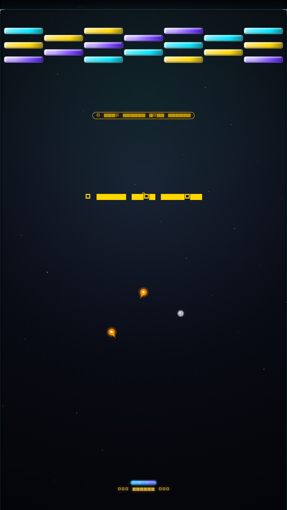
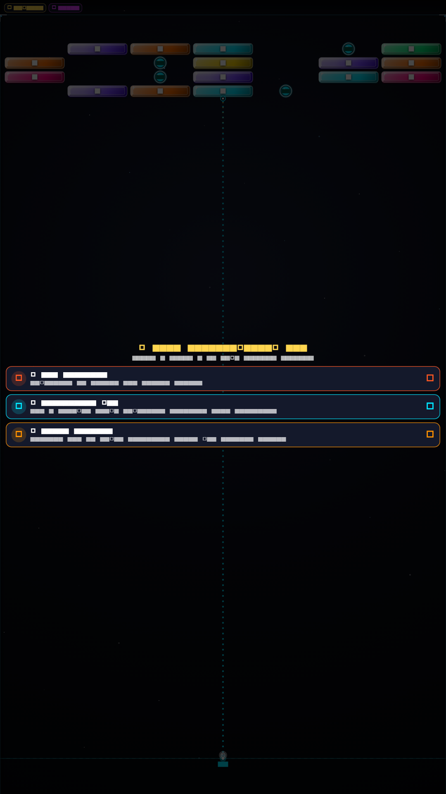
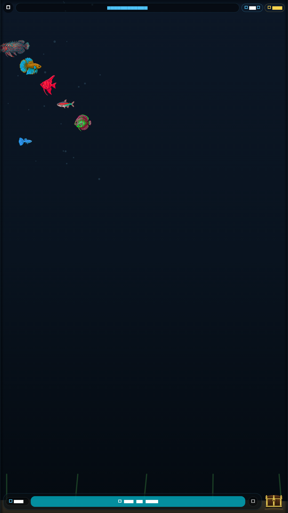
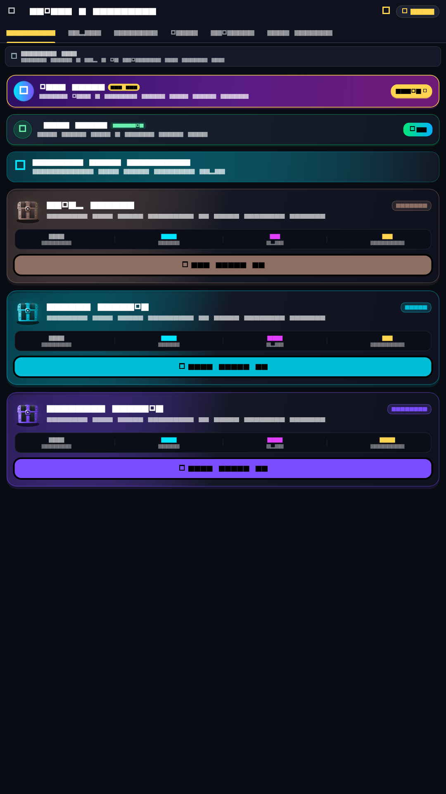
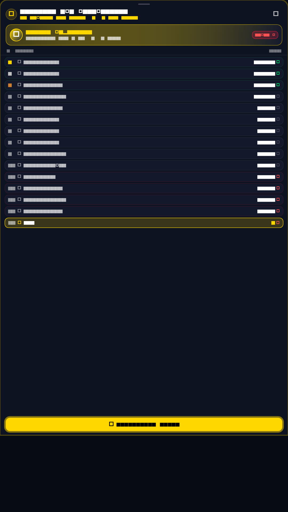
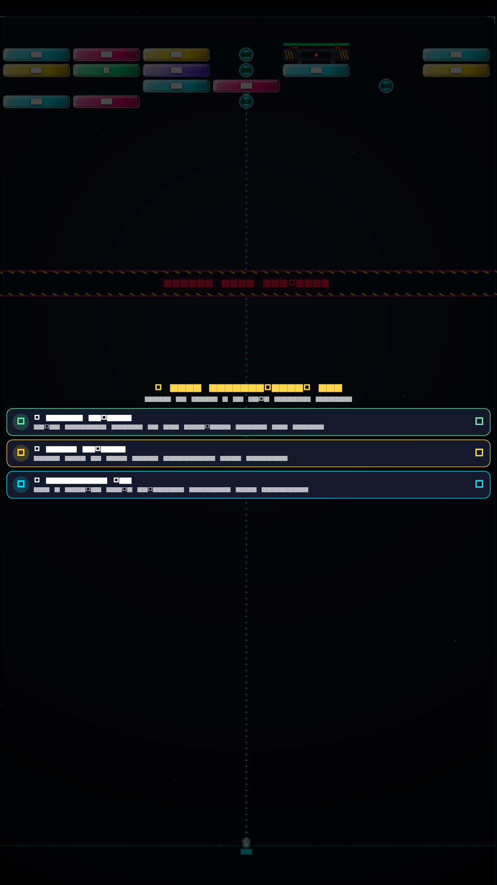
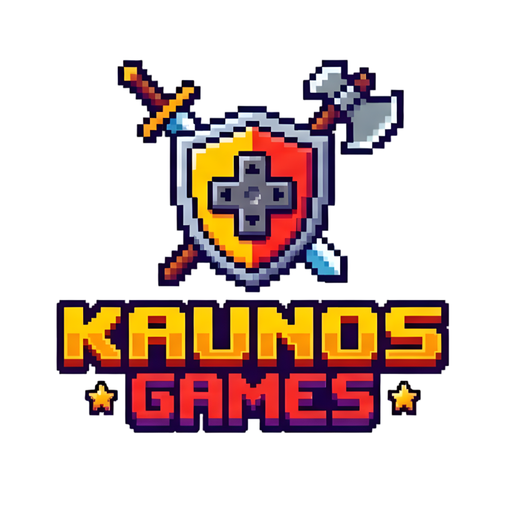

Kurzgesagt Uzay Kancası (40.000 km/h) ➔ İzmir Hasan Usta Süper Köşe Vuruşu ➔ 30x Ateş Topu & Gerçek Kırmataş Oynanışı.
"Uzaydan demir bilye bıraksan ne olur? Saatte 40 bin kilometre hız ve 3 bin derece ısı!"






